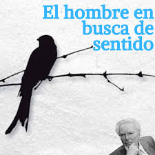

.png)
Descubre lecturas seleccionadas especialmente para acompañarte en tu crecimiento personal y bienestar emocional. Cada recomendación ofrece historias, técnicas y reflexiones que pueden inspirarte, motivarte y ayudarte a comprender mejor tus emociones y procesos internos.

Un libro íntimo, honesto y creativo que mezcla ilustraciones, humor y reflexiones sobre el desamor. Amalia Andrade transforma el dolor de una ruptura en una guía cálida y divertida para sanar, reencontrarse y aprender a construir una vida más auténtica. Es como hablar con una amiga que te entiende y te acompaña mientras vuelves a levantarte..
Un testimonio profundo donde Viktor Frankl narra su experiencia en los campos de concentración nazis y reflexiona sobre la capacidad humana de encontrar significado incluso en el sufrimiento más extremo. A través de la logoterapia, muestra cómo tener un propósito puede sostenernos, darnos fuerza y guiarnos hacia una vida más plena.

Bill Bryson nos lleva en un viaje fascinante por la historia del universo, la ciencia y la vida misma, explicando con humor y claridad cómo funciona el mundo que habitamos. Desde el Big Bang hasta el origen del ser humano, el autor convierte temas complejos en relatos entretenidos y sorprendentes que despiertan curiosidad y asombro.